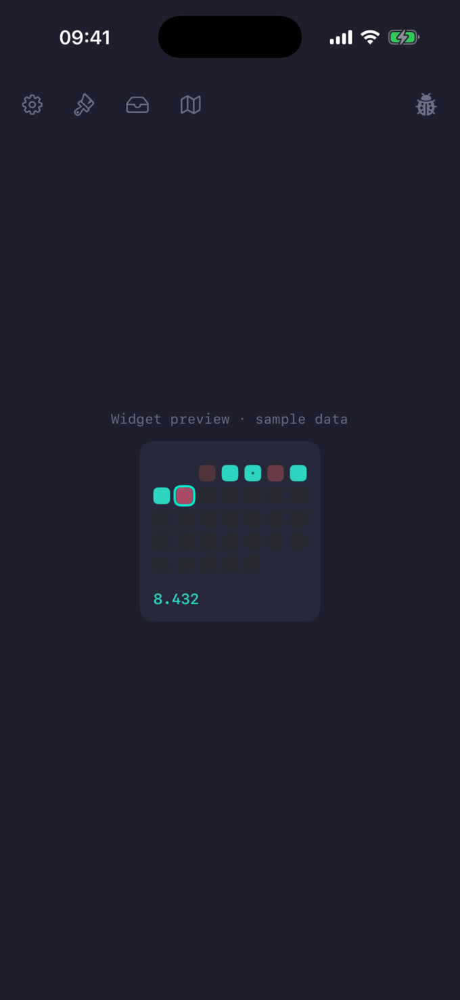

Steps
Personal step counting that also tells you where to walk to reach 10,000.
A small iOS app, home- and lock-screen widgets, and a watchOS app that read Apple Health and paint each day of the month by how close you got to your 10,000-step goal — empty to a deep hue, a standout color for the goal, the way a contribution graph reads a year of commits. Pick from a set of palettes to match your home screen. And when you fall short, it points you to a real walk that would close the gap.



What it does
-
A widget you can make your own
Twelve palettes, tunable response curves, day shapes, and a marker for the month's best day — the contribution grid, painted your way, on both the home and lock screen.
-
More than steps
Log a ride, a strength session, or mindful minutes and a small badge joins the day beside the count. Fitness, cycling, and meditation, all at a glance.
-
A walk that reaches your goal
Short of 10,000? Steps suggests a round trip to a place you've actually been — with the real walking distance and step cost — then flies the route in photorealistic 3D.
Changelog
A running log of what shipped — visits, the 3D flyover, the watch app, the tunable grid, and more. Read the changelog →